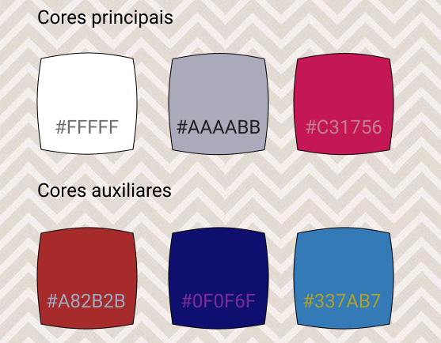
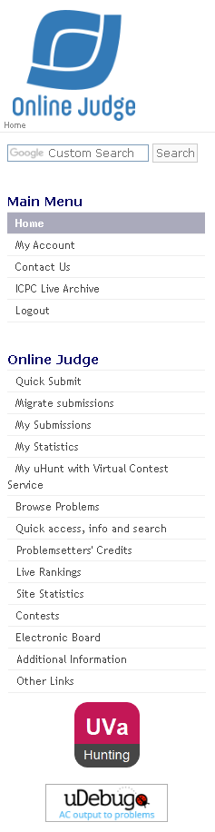

Guia de Estilo
1. Introdução
Trata-se de um registro das principais decisões de design tomadas, de forma que elas não se percam, isto é, sejam efetivamente incorporadas no produto final.
1.1 Objetivo do guia de estilo
Guias de estilo servem de ferramenta de comunicação entre os membros da equipe de design e também com a equipe de desenvolvimento. É importante que as decisões de design possam ser facilmente consultadas e reutilizadas nas discussões sobre extensões ou versões futuras do produto.
O site avaliado UVa online judge não possui um guia de estilo público, sendo assim, criaremos um já com as novas decisões de melhorias para o sistema em questão.
1.2 Organização e conteúdo do guia de estilo
A organização do guia de estilo será baseada na estrutura que Marcus(1992) e Mayhem(1999) recomendam.
1.3 Público-alvo do guia de estilo
O público alvo é própria equipe que está propondo uma reformulação da aplicação para aplicar em um protótipo. A equipe vigente durante a criação desse guia de estilo é Sérgio Cipriano, Washington Bispo e Paulo Batista.
1.4 Como manter o guia
Aplicaremos a teoria estudada na disciplina Interação Humano Computador a fim de propor um protótipo condizente com os conceitos aprendidos. Futuras alterações no novo protótipo do UVa deverão seguir o estilo definido aqui.
2. Resultados de análise
2.1 Descrição do ambiente de trabalho do usuário
Na tela inicial, no centro da página o usuário encontra uma notícia sobre a nova plataforma que está sendo desenvolvida. À direita ele encontra um livro recomendado e um aviso sobre os próximos contests. À esquerda ele encontra o local de login e abaixo dele se encontra as principais funcionalidades do site, tais como: submeter questão, minhas submissões, procurar problemas e etc. E na parte mais baixo do site podemos encontrar uma nota de agradecimento pelo suporte e outra recomendação de livro
3. Elementos de interface
3.1 Disposição espacial e grid
A disposição está atual muita confusa. Na aba esquerda da home está linkado janelas que nem existem mais, exemplo disso é a aba de estatísticas do site que ao ser selecionada o usuário é redirecionado à uma janela vazia. Além disso, vários links e emails que são apresentados na home já estão defasados e não recebem nenhuma atualização.

Figura 1: Home atual do site.

Figura 2: Exemplo de aba vazia/sem conteúdo.
Esses problemas são causados por um excesso de informações datadas ou não trabalhadas. Desse modo, para corrigir essas falhas, será resuzido a quantidade de informações, apresentando apenas os pontos principais e funcionais. Algumas dessas janelas vazias possuem ideias interessantes, mas falham em aplicar essa ideia no conteúdo visto que estão vazias.
A janela Home(inicial) não acrescenta nenhuma informação relavante. Desse modo, iremos dividir o UVa em 3 janelas principais: login, categorias de problemas e submissão de problemas. A janela login será a nova aba principal e, mesmo sem fazer login, todas as demais abas estarão disponíveis. A janela de categorias de problemas será uma reformulação da atual "Browse problems". Tal como dito na avaliação, um dos principais problemas do UVa é a desorganização dos problemas, assim, o objetivo da reformulação por categorias é resolver essa falha. Por fim, a janela de submissões visa melhorar o feedback das respostas de cada problema. Atualmente, é necessário acessar outra aba para ver a resposta da submissão, já no modelo que criamos na Figura 4, tudo ocorrerá na mesma janela.
Segue abaixo os grids que criamos para cada janela principal.

Figura 3: Grid da janela de categorias de problemas.

Figura 4: Grid da janela de submissão de problemas.

Figura 5: Grid da janela de login.
3.2 Janelas
No total o UVa possui 6 janelas funcionais: Home, uHunt, uDebug, Contests, Browse Problems, Submissions. As demais estão sem conteúdo ou apresentam alguma falha que impede acesso.
3.3 Tipografia
São utilizados duas fontes principais no website que mudam de cores dependendo do contexto:
-
Verdana

-
Trebuchet MS

3.4 Símbolos não tipográficos


Figura 6: Símbolos não tipográficos do UVa.
3.5 Cores

Figura 7: Cores do UVa.
4. Elementos de interação
4.1 Estilos de interação
Dentro do UVa online judge é encontrado predominantemente o WIMP(Windows, Icons, Menus, and Pointers), mas principalmente o uso de menus, aonde é oferecido ao usuário uma lista de opções e ele escolhe uma, como é visto na figura 8. Além disso, o site mistura com o WIMP o uso de formulários na hora das submissões.
4.2 Aceleradores (teclas de atalho)
Não possui nenhum tipo de acelerador.
5. Elementos de ação
5.1 Preenchimento de campos
Além do login e do cadastro, é necessário preencher campos nas submissões dos problemas. Segue foto expositiva:

Figura 8: Janela de submissão do UVa.
5.2 Seleção
Basta escolher a linguagem de programação e enviar o código para solucionar o problema. Também é possível selecionar o arquivo com o código.
5.3. Ativação
Depois basta clicar em "enviar". O código será submetido e corrigido.
6. Vocabulário e padrões
6.1 Terminologia
- Contests: É o nome adequado para as competições;
- Submissão: É o envio de um código para ser julgado;
- Casos de teste: testes que as submissões são submetidas;
- uDebug: Um site que tem casos de teste adicionais;
- uHunt: Rastreia seu progresso;
- ICPC: A competição mundial de programação competitiva.
Obs: Alguns termos específicos podem ser encontrados dentro dos problemas.
6.2 Tipos de tela (para tarefas comuns)
No UVa, todas as páginas possuem como padrão uma barra lateral à esquerda.

Figura 9: Barra lateral do UVa.
6.3 Sequências de diálogos (e.g., para feedback ou confirmação de uma operação)
O site não cria sequência de diálogo, de forma que a única maneira de ver o feedback de uma submissão é indo até a aba "My submissions". Além disso caso haja algum erro na submissão (como o envio de uma imagem por engano) o site redireciona para uma aba de erro.
7. Bibliografia
BARBOSA, Simone; SILVA, Bruno. "Interação Humano-Computador". Elsevier Editora Ltda, 2010.
8. Versionamento
| Data | Versão | Descrição | Autor |
|---|---|---|---|
| 11/10/2020 | 1.0 | Criação do documento | Sérgio Cipriano e Washington Bispo |
| 12/10/2020 | 1.1 | Criação das figuras | Sérgio Cipriano e Washington Bispo |
| 13/10/2020 | 2.0 | Primeira versão completa do documento | Sérgio Cipriano e Washington Bispo |
| 14/10/2020 | 2.1 | Atualização na bibliografia | Sérgio Cipriano |
| 21/10/2020 | 2.2 | Deletando tags br | Sérgio Cipriano |